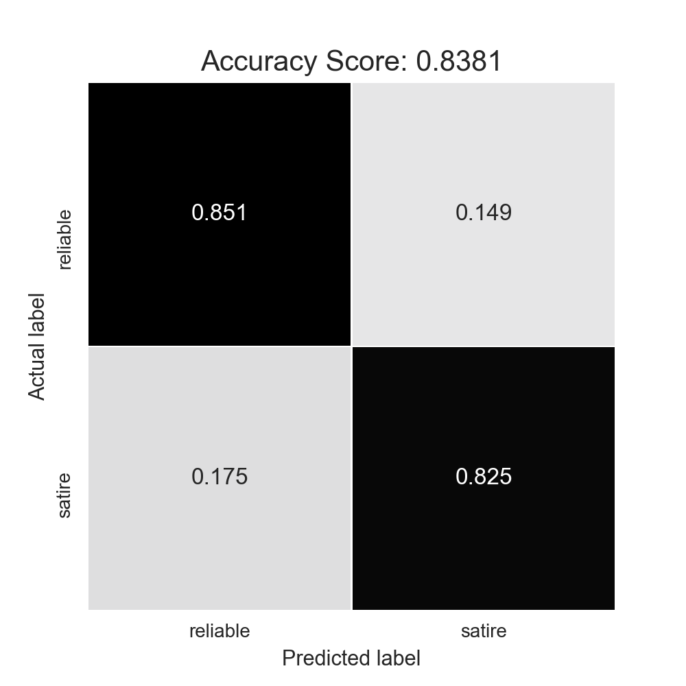

Investigating the Similarities Between Satire and Misleading News Headlines
An investigation on the similarities between satire and reliable news headlines, and how they can help determine the strategies used in other forms of misleading or fake news.
TL;DR Using the Fake News Corpus dataset, I created a logistic regression model to differentiate between reliable and satire news headlines. This model demonstrated that conspiracy and clickbait headlines tend to be more similar to satire than reliable headlines.
While humans are fairly adept at recognizing sarcasm from seriousness, the prevalence of fake news and outlandish headlines have been making it much harder to determine what is real in the media. In this article we will attempt to create a model to differentiate between real and satire news headline text. We can also apply this model to various other types of news to investigate whether the text and writing is more similar to that of reliable or satire news. This article will explore conspiracy, clickbait and fake news. All of these types of news attempt to pass themselves off as reliable news in order to either gain more traffic on their sites or possibly further a political agenda. While the goal is for the headlines to be interpretted a real, the contents tend to be more outlandish and sensational, which is more simialr to satire. By comparing the contents of each type to the reliable and satire news, we can find out whether the headliens are crafted realistically enough to pass as reliable news, or if the content itself will give it away as not being real.
Obtaining and Cleaning the Data
I decided to use the open source dataset Fake News Corpus github repo available here to provide the satire and credible news headlines. The dataset itself consists of over 5 million articles classifiedThe original source used http://www.opensources.co/ to classify each domain, but this site has since closed down. into different types such as credible, satire, fake news, and so on. It is important to note that the data is classified into each type based solely off the domain of the article rather than the content article itself. In order to make this data easier to work with, I cleaned the raw csv to eliminate unnecessary columns, non-ascii characters, and rows with types that did not fall into the categories outlined by the original corpus.
To get a better idea of where our news is coming from, let's explore the domains under the credible and the satire types. In the original dataset, the domain names were expressed as the news site they were scraped from, and thus included url extensions. To standardize the domain names, I eliminated punctuation and stop wordsThe complete list of stopwords used: ["com", "www", "org", "co", "uk", "aus", "domain", "columns", "rows", "au", "af", "ca", "go", "de", "in", "nz", "m", "net"]. After doing this, we can create a word cloud to reflect the domains classified as reliable news and satire news and their relative frequenciesThe distribution of these sites is very skewed, with the most common sites appearing exponentially more often than the others. To get a wrod cloud with more variety I took the log of the frequency of each domain. While this shows us more variety in what domains are represented, remember that the larger names come up hundreds or thousands of times more oftne than the small names. It is also important to note that the size of each domain is a reflection of its relative frequency in the dataset, and the two word clouds are on different scales. There is much more reliable news data, so even the largest of satire domains could have less frequency than the smaller names on the reliable cloud..


Fig. 1 Word cloud demonstrating the domains of the satire news (right) and reliable news (left).
Most of these sources should be recognizable, and all have a significant web presence. We can see that the reliable news sites have a variety of specialties, from financial news to sports news to current events. Note that in the original dataset news classified as political or biased are in their own categories, meaning that all of the domains represented are more or less non partisan, and are not trying to serve a certain agenda. This will help us to create a model that will not be skewed towards certain political beliefs or persuasive techniques. The satire news domains are all strictly satire news, and could be on a variety of topics. We definitely have a lot of political headlines present, and most are not trying to promote an idealogy as much as poke fun. Now that we have a better idea of what data we are working with, we can begin training a model.
Creating and Adjusting a Model
So, let's create a classifier to determine whether an article is reliable or satirical. I used the SciKitLearn Count Vectorizerdocumentation found here to create a bag of words model for our data. I also split the data into test and training sets stratified by domain. By doing this, we retain the proportions of each domain represented in the test and training datasets. Finally, I constructed a logistic regression modelbuilt with SciKit Learn, documentation found here To visualize the accuracy of the model I created a confusion matrixfurther information and documentation found here to demonstrate what each observation in the test set is being classified as.

Fig. 2 Confusion matrix of the entire dataset. 1 corresponds to satire news while 0 corresponds to real news.
This figure shows us how our model is performing in classifying reliable news (labelled as 0) and satire news (labelled as 1). Looking at this, we see a fairly high accuracy rate. while this is promising, looking a bit closer we see that the satire data has a very high false negative rate. There are about 21 thousand satire headlines being misclassified as reliable news, which is much higher than the true positive value of about 12 thousand. This is becuase the satire data is being clobbered by the real news data as there is significantly more reliable news data than satire. In fact, if we were to classify all headlines as credible news, we would see an accuracy of .95! This is not quite what we wanted, since we are trying to classify articles based off of their headline text content rather than pure probability. So, in order to better understand the problem let's examine a Receiver Operating Characteristic Curve (ROC Curve). The ROC Curve will show us the performance of this logistic regression model as our discrimination threshold is varied. It will compare the true positive rate with the false positive rateMore information and documentation found here. Note that a model with perfect accuracy will have the area under the curve be exactly one.

Fig.3 ROC curve demonstrating the low true positive rate implicit in our data.
The area under the ROC curve is very large, indicating our model is very accurate. However, as we noticed this is because we tend to have a lot of false negatives classifying satire news as real news. If we were to actually implement this in order to discern real and satire news articles this would be problematic, so lets try and shift along the ROC curve to an area with lower false negative rates. We are trying to make a model that can discern between reliable and satire news based off of how they are written rather the actual frequencies of reliable versus satire news. Even though there are many more reliable news headlines both in this dataset and the real world, we want to ensure that we are solely classifying based off of the text content of the title rather than these outside factors. This will create a model that will be more effective at classifying both satire and reliable news in general, rather than when we have significantly more real news than satire. We will need to sacrifice some accuracy and true positive rates to change this. So, I attemped to create a new reliable news dataset using a stratified sample from our total data by domainThis processing will essentially be lowering the number of values in our dataset, n, and thus will increase estimation error and generalization error. While it is not ideal to be raising error, we do want to lower our approximation error created by simply assuming a lot of the satire articles are actually reliable.. I sampled the data to have equal amounts of real and satire news. Then we can create a new logistic regression model that wil hopefully be more effective at classifying satire news headlines. We get a confusion matrix as such:

Fig.4 Confusion matrix for a smaller real news population. 1 corresponds to satire, 0 corresponds to reliable news.
While this is significantly less accurate than the one above, we do see a better false negative rate. There are now a little under 6 thousand satire articles being misclassified as reliable. However, we do see about 5 thousand reliable news headlines being classified as satire. This is acceptable, as we do see the majority of both reliable and satire news being classified correctly, which was not the case in our previous model with all of the data.
Now, we will use this on some of the other types and see which ones get classified as satire versus real news. I decided to focus on conspiracy news, fake news, and clickbait news as these types tend to have the most outlandish headlines that attempt to pass as credible news yet in reality are not. I would like to see whether these different types of news are classified as being more similar to satire news headlines or credible news headlines by seeing how the headlines from my dataset get classified.
Trying the Model on Conspiracy, Fake, and Clickbait News
First, lets investigate conspiracy news. The conspiracy headlines tended to be the most outlandish, yet still are attempting to be interpretted as important and valid news stories. after running the values through the logistic regression model, we can see the breakdown of satire versus reliable news as follows:

As we can see, headliens tend to get classified as satire more often, with a proportion of 77.9% as compared to reliable news at 22.1%. While this is not that large of a difference, the majority of our articles are still getting classified as satire, indicating that they are more similar. This makes sense, as these articles are using words that are much more outlandish, and often reflect topics that the satire news sites are mocking. Because of this, we see a lot of similarities.
Next, we take a look at fake news. For this category, the headlines tended to be more plausible than the conspiracy news, and while the events they discussed tended to not be real they were not as overtly fake. So, we see the classification breakdown is less skewed than for conspiracy news.

While more articles are being classified as satire, the proportions are significantly more even. This likely reflects how fake news headlines are meant to mimic reliable news, and tend to focus on news that is shocking yet not outlandish. However, we still see not that less than half of the headlines are not classified as reliable. This is likely because deep down fake news is just that: fake. The events being discussed are sensationalized to some degree, and while some can slip under the radar into reliable classifications we do still see that there are also cases where the writing is more conducive to satire news.
Finally, we can take a look at clickbait news. Clickbait news is often intentionally very outlandish and extreme, looking for simply views over depth of content. While headlines tend to not be overtly incorrect like fake news, they are definitely sensationalist. From this we see a similar breakdown to that of conspiracy news, displayed below.

The proportion of reliable classifications is much smaller than that of satire, and from this we see that the clickbait headlines are more similar to that of satire than real news. Once again this makes sense, as the clickbait articles tend to be exaggerated and are about more exciting topics than the regular news. They likely use similar style to that of satire as they look to have more excitement and interest than just the news itself.
Conclusion and Further Development
Overall, from this analysis we can say with some degree of certainty that conspiracy, fake, and clickbait news headlines tend to be more similar to satire news. While I cannot single out exactly what traits are most similar (eg word choice, punctiation...) we can see that the they are more similar to satire rather than reliable news. In a further examination on this topic I would like to look further into ways to tune the initial classifier to be more accurate, since it has a fairly high error rate. The results could be due to variability, or some other hidden factors I have not considered. I would also like to analyze different domains to see if some tend to have different styles that lend themselve more to satire or reliable.